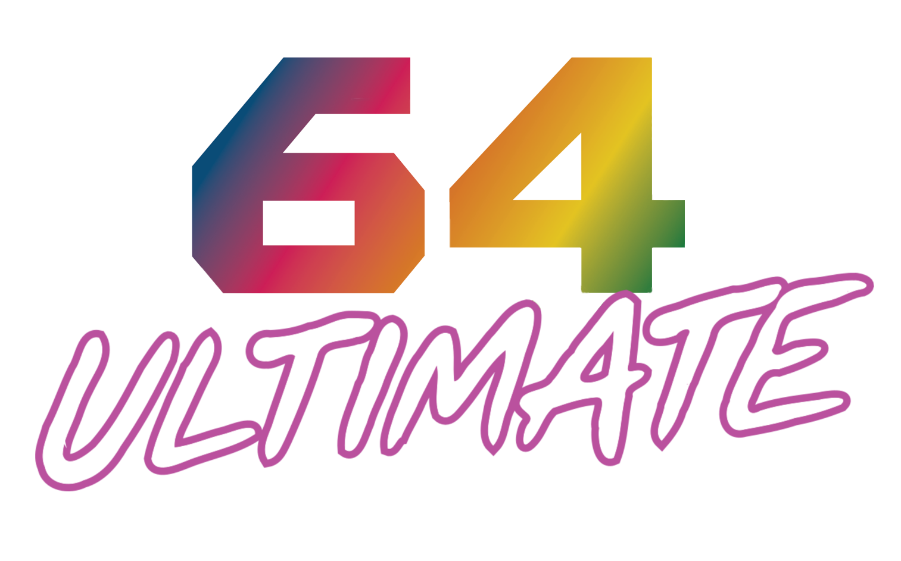
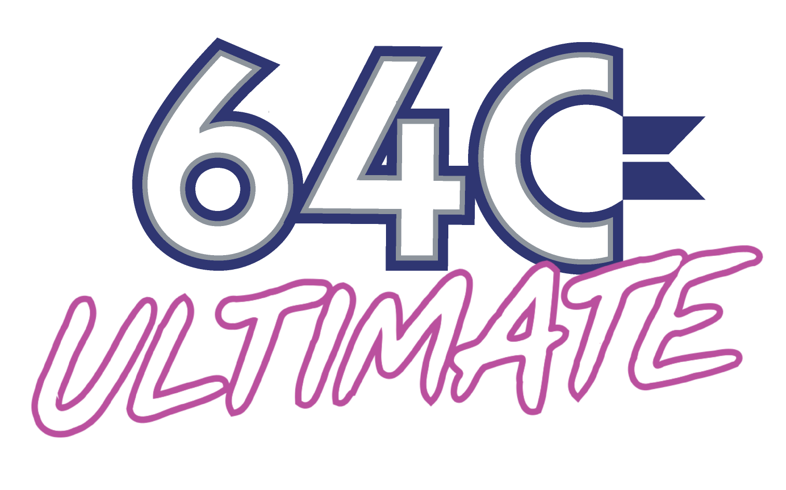

≡
Commodore 64 Block Programming


Made for Commodore Ultimate 64
Commodore 64 visual assembler
Huzz be egy mnemonik blokkot balrol, rendezd oket sorba, es nezd meg a jobb oldalon az assembly nezetet.
Ide ejtsd a bal oldali blokkot, vagy rendezd at a mar bent levo sorokat.
Az osszerakott szoveges kod innen indulhat tovabb export fele.
Az egesz 64 KB cimter egy csikban, jelolve a foglalt, szabad, ROM es I/O reszeket.